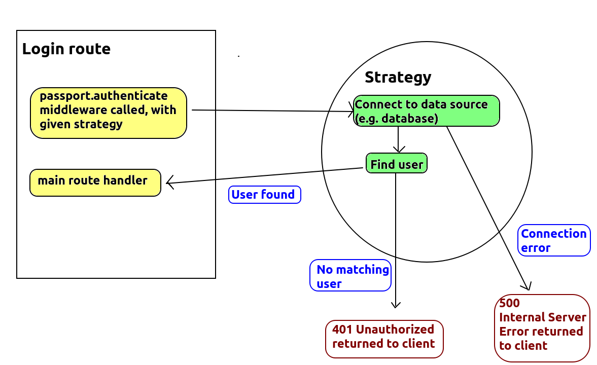
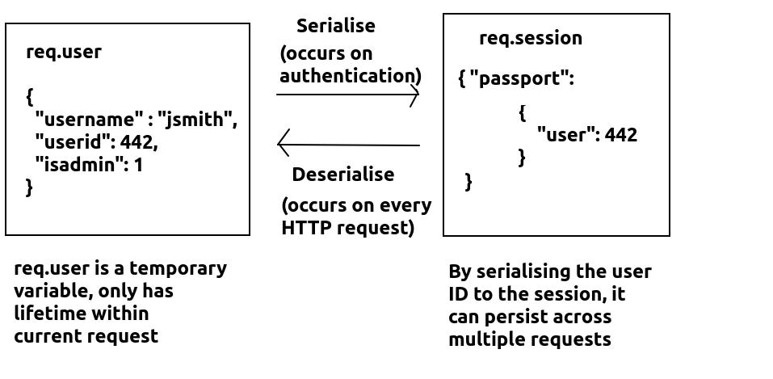

As you are probably aware, many websites allow authentication using third-party providers, such as Google, Facebook and Twitter. Passport is a Node module which allows your app to authenticate with such third-party providers, as well as local login with the usernames and passwords stored in your own database, using a common style of code. Thus, the goal of Passport is to allow the use of common code to authenticate with many different providers.
Passport is based around strategies. Each strategy represents a method of logging in with a different provider. There are strategies available for third-party login providers such as Google and Facebook, as well as the local strategy for logging in using a local database on your own server. When developing with Passport you specify one or more strategies to use; a single app can authenticate with a local database and with a third-party provider. In your strategies you implement code to check the login details.
We will only cover the local strategy here in detail, but the others are described at the Passport website
To use Passport, you need to install both Passport itself and one or more strategies as NPM packages. For example the npm command below will install both Passport and the local strategy:
npm install passport passport-localIn your code, first
require() it, as usual for a third-party
module:
const passport = require('passport');
You then import the specific strategy you want to use. For example, to use the local strategy, use:
const LocalStrategy = require('passport-local').Strategy;
You must also link Passport to your Express application as middleware. This can be done as follows:
app.use(passport.initialize()); app.use(passport.session());The first middleware will initialise Passport, while the second will set up Passport for serialisation and deserialisation with sessions (see "Serialisation and deserialisation", below). The
app.use(passport.session()) must come AFTER initialising express.session, as it relies on sessions having been setup
already, but should also come BEFORE any other Passport code.
The diagram below shows the general mechanism of operation of Passport.
Note how we typically call our strategy from our login route. The strategy then
checks the username and password, and if they are correct, we are returned to the route and the main route handler is run (which might send back the login details to the client as JSON). On the other hand, if the login details are correct
or we cannot connect to the database or other data source containing the
user details, we tell Passport to return a 401 or 500 respectively. The
detail on how this is done is discussed below.

We will start discussing the detailed implenentation by looking at the /login route, as this is the natural place to start in order to understand Passport. A commented /login route is provided below. Note how it calls the appropriate strategy - the local strategy in this example.
app.post('/login',
// call Passport's authenticate() method (which is actually middleware)
// This will use the appropriate strategy to authenticate the user: the
// local strategy is used here as we pass an argument of 'local'.
// The strategy must authenticate the user with the given credentials
// and return an object containing the user details on completion.
//
// If the authentication fails, a 401 will be AUTOMATICALLY sent back.
passport.authenticate('local'),
// The actual route handler, which actually sends a response back to the
// client. This will be called by the strategy if the login was
// successful. (We could also use additional items of middleware here
// to run after the authentication)
(req, res) => {
// the strategy code will attach the user details to the request object
// 'req' as the property 'req.user'. This is explained below.
// Here, we send 'req.user' back to the client as JSON.
res.json(req.user);
}
);
Note how we call the strategy with passport.authenticate(), passing in the name of the strategy (local represents the local strategy) as an argument. The strategy will then run, and if the login was successful,
the code will redirect back to the /login route and the next
item of middleware, or (as is the case here) the final route handler, will
be called.
So we will now look at an example of a strategy, specifically a LocalStrategy. What do we do inside the strategy?
username, password
and done. The first two parameters are the username and
password. The strategy will automatically extract these from the request body: it will look for req.body.username and req.body.password so you must name your POST fields username and password. done is a
callback function that must be called to complete the authentication
process (rather like next in Express middleware).done() callback
with null as the first argument and an object containing
the user details as the second. This will call the route handler (or
the next item of middleware, if there is one) in the /login
route (or whatever route called the strategy). The user details are attached to the request object req
as req.user; note how, in the /login route above,
we send back the
req.user object to the client as JSON if the authentication
is successful.done()
callback with null as the first argument and
false as the second. This will cause Passport to
generate a 401 (Unauthorized) response to send back to the client.done()
callback with the error as the first argument. This will cause Passport
to generate a 500 (Internal Server Error) response to send back to the
client.
// Note that the local strategy will AUTOMATICALLY read fields named 'username'
// and 'password' from req.body, and will supply them as parameters to the
// function passed in as an argument to LocalStrategy. So in the code below,
// 'username' and 'password' will contain the user's login credentials sent
// within a POST request.
passport.use(new LocalStrategy(async(username, password, done)=> {
// Imagine we have a user DAO which contains code to query the 'users' table
const userDao = new UserDao(db);
try {
// imagine our user DAO has a method to check the username and password
// against the database. It will return an object containing the full
// details of the user (username, user id, admin status) if the
// username and password is correct, or null otherwise.
const userDetails = await userDao.login(username, password);
// If null is returned, call the 'done()' callback with 'false' as
// the second argument - to indicate authentication was unsuccessful
// This will cause Passport to AUTOMATICALLY send back a 401 to the client
if(userDetails === null) {
return done(null, false);
} else {
// otherwise call the 'done()' callback with the user object as
// the second argument. This will be automatically attached to
// the 'req' object as 'req.user'
return done(null, userDetails);
}
} catch(e) {
// If there were errors with the database (e.g could not connect to
// the database), call 'done()' with the error as the first argument
// This will AUTOMATICALLY send back a 500 error with the contents of
// "e" in the response body.
return done(e);
}
}));
When using Passport, we need to check the contents of req.user when writing middleware used to protect routes from unauthenticated users (non-logged-in users), rather than a username within req.session. This does raise a question: how do we persist req.user across multiple requests? This is detailed in the next section.
We have implemented authentication with a local strategy, which results in the user details being saved in req.user if authentication was successful. However, how can we preserve information across multiple HTTP requests, as a user interacts with the website? req.user, being a property of the request object, only has a lifetime within the current request. To preserve the user across multiple requests, we need to save the user details to a session variable using serialisation/deserialisation. We need to define serialisation and deserialisation functions which saves user information to, and restores it from, req.session across requests. Specifically the serialised data is saved to req.session.passport.user within the session.
So, when a user authenticates, serialisation will take place to save the user in the session. When a client makes another HTTP request to the server, the user from the session will be deserialised into req.user. The diagram below shows the general mechanism of serialisation:

We perform this with the serializeUser() and deserializeUser() methods, which save user information to the session, and restore it from the session, respectively. Typically we do not need to preserve all the user information in the session, just enough to identify the user - so the user ID will be fine. Each of these methods takes a callback function
(an arrow function here) which actually does the processing, and like the
strategy code above, this is supplied with a done callback which you need to call to complete the serialisation or deserialisation.
// Serialise function - saves the user from req.user to the session
// The parameter 'userDetails' is the information contained within 'req.user'
// We only need to save the ID, as that is sufficient to identify the user
passport.serializeUser((userDetails, done) => {
done(null, userDetails.id);
});
// Deserialise function - restores the user from the session to req.user.
// It needs to perform a database query (using our DAO) to restore the full
// user details (username, admin status) using the ID.
// The full user object is passed to done(), this will result in it being
// attached to req.user.
passport.deserializeUser(async(userid, done) => {
try {
const userDao = new UserDao(db);
// use the DAO to find the full user details from the user ID.
const details = await userDao.findById(userid);
// call "done()" with the full details. This will result in the details
// being attached to the "req" object as "req.user".
done(null, details);
} catch(e) {
// handle error by calling done() with the error information
done(e);
}
});
You can implement a logout function in the same way as a regular login system. This will terminate the session and thus req.session.passport.user will be deleted. Therefore, when deserialisation is attempted on the next request, there will be no information in the session to deserialise and the req.user object will not be set up.
How are authentication errors handled? If done() is called from your strategy with false as the second argument (to indicate that the login is invalid), Passport will automatically send back a 401 Unauthorized HTTP response to the client, which the client can then test for. However, you may want to supply a custom JSON response to the client.
To do this, you need to set up an additional route to send back the JSON, e.g:
app.get('/badlogin', (req, res) => {
res.status(401).json({error: "The login was invalid"});
});
and then tell Passport to redirect to this route if the login fails using the failureRedirect option to passport.authenticate(), e.g:
passport.authenticate('local', { failureRedirect: '/badlogin' } )
Passport makes it easy to implement multiple strategies in the same application, which can be selected based on the argument passed to passport.authenticate(). I will not go into any detail as to how to implement strategies other than the local strategy, but I will show you a snippet of code making use of another strategy - the OpenStreetMap strategy - which allows you to login to a site using your OpenStreetMap login details:
passport.use(new OpenStreetMapStrategy({
//OpenStreetMap options (omitted)...
}, (token, tokenSecret, profile, done) {
// OpenStreetMap authentication callback function...
return done (null, { id: profile.id, username: profile.displayName } );
});
I will not describe the OpenStreetMap strategy in any detail but you should
take note of some similarities to the local strategy. You will
notice that it takes a callback function which runs when the user has
authenticated with OpenStreetMap. The profile object contains an
id field with the user's OpenStreetMap ID, and a displayName field with the
user's name, which can be placed in an object and passed to
done() in the same way as the local strategy. This object will
then be stored in req.user, as before.
Then, you could setup an OpenStreetMap login route to use the strategy:
app.post('/osm/login',
passport.authenticate('openstreetmap'); // use OpenStreetMap strategy
});
See the official documentation here.
Rewrite your login system from Topic 7 to use Passport, storing the user's ID, username and admin status inside req.user.